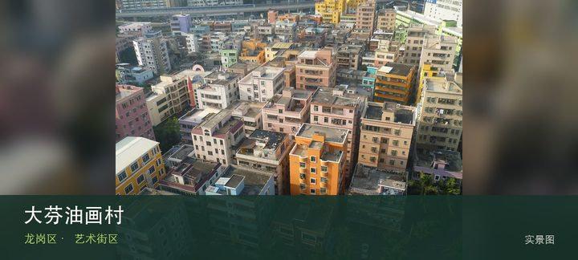
授权实景图大芬油画村
大芬油画村位于布吉大芬社区，画廊、商品油画、原创工作室和居民社区密集混合，价值在观察全球订单生产与个人创作如何共处。先辨…
DISTRICT GUIDE · 45 PLACES
客家围屋、油画村、郊野公园与产业科普共同构成东北部的大尺度旅行。
SMALL PICKS
印刷、翡翠、邮票、矿物、匠作与非遗博物馆很有专题性，适合按兴趣专程预约。
ALL PLACES

授权实景图大芬油画村位于布吉大芬社区，画廊、商品油画、原创工作室和居民社区密集混合，价值在观察全球订单生产与个人创作如何共处。先辨…
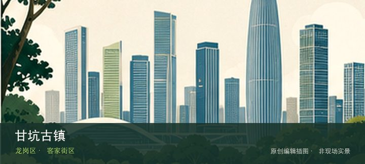
编辑配图·非现场实景甘坑古镇位于吉华甘坑，客家建筑、炮楼、商业文旅和节庆活动被整合成大型街区，仍需区分历史遗存与后期营造景观。与同类地点相比…
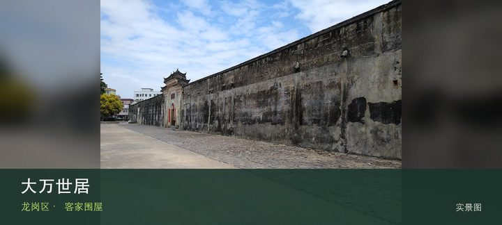
授权实景图大万世居位于坪地大万社区，大型客家围屋以围墙、角楼、祖祠和内部巷道展示宗族聚居结构，建筑空间本身比拍摄外立面更重要。现场…
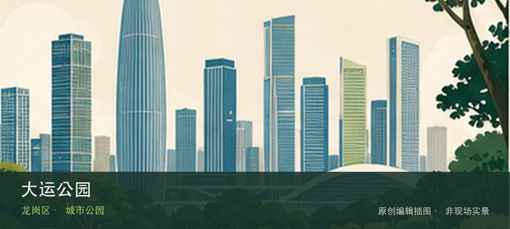
编辑配图·非现场实景大运公园位于大运中心周边，湖区、体育建筑和长距离绿道围绕大运中心展开，适合观察大型赛事设施如何转为市民日常空间。先辨认大…
龙城公园位于龙岗中心城，山体、台阶和中心城视野提供一小时左右的短登高，社区入口多但不同入口的坡度与返程方向差异明显。先辨…
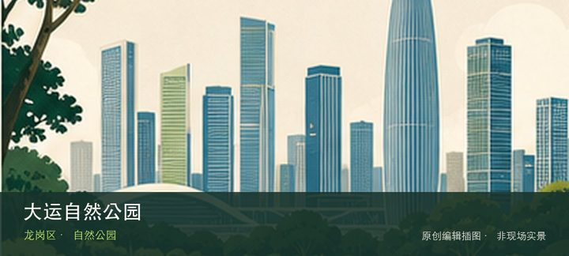
编辑配图·非现场实景大运自然公园位于大运北侧，保留林地、山塘和新区边缘步道，氛围比大运公园更自然，开放路径和施工边界需要按现场标识选择。先辨…
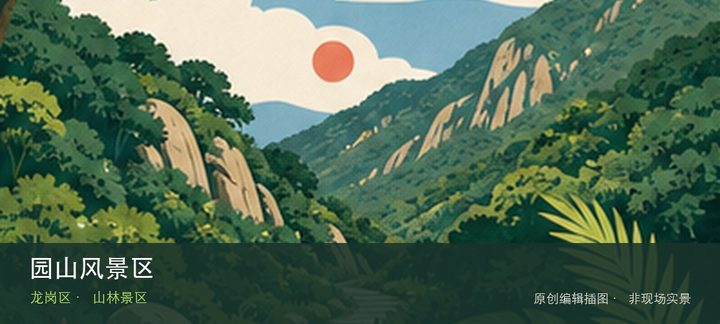
编辑配图·非现场实景园山风景区位于横岗园山，溪谷、山林和经营性游乐设施共同组成传统山林景区，门票、开放项目与雨后溪谷安全都需当天确认。从园山…
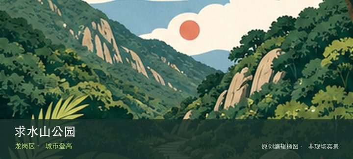
编辑配图·非现场实景求水山公园位于南湾南岭村，密集台阶、仿长城景观和高位城市视野组成带有年代感的社区景区，部分设施运营状态可能变化。先辨认仿…
龙岗儿童公园位于龙岗中心城，大型无动力与主题游乐设施服务亲子客群，热门设备的预约、排队和身高限制比公园面积更影响体验。从…
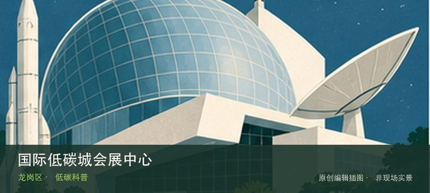
编辑配图·非现场实景国际低碳城会展中心位于坪地低碳城，绿色建筑、低碳技术与会展活动构成产业展示窗口，非展会日的公众开放内容与活动日差异很大。…
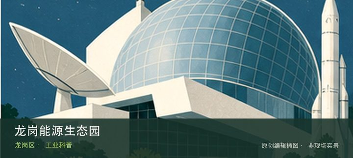
编辑配图·非现场实景龙岗能源生态园位于坪地，垃圾焚烧发电、烟气治理和园区生态设计在真实设施中呈现，参访必须通过预约导览和安全通道。这里不是只…
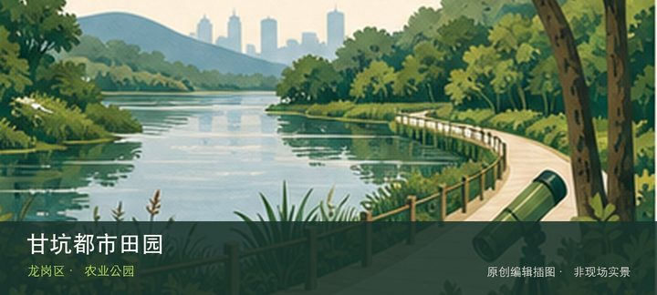
编辑配图·非现场实景甘坑都市田园位于吉华甘坑周边，季节花田、农业体验和亲子活动依运营日历变化，与古镇商业街区是两种不同节奏的目的地。从季节性…
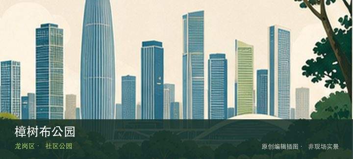
编辑配图·非现场实景樟树布公园位于南湾樟树布社区，河岸绿地、社区步道和小型活动空间构成低调日常公园，适合观察南湾高密度社区的水岸缝隙。与同类…
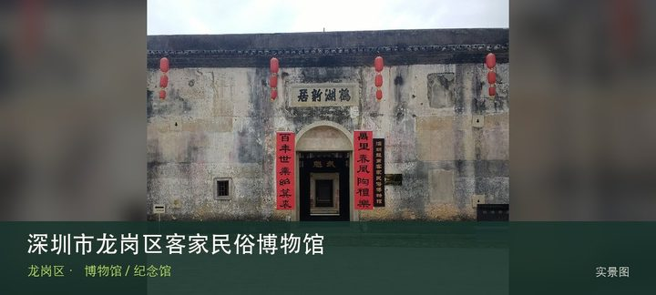
授权实景图深圳市龙岗区客家民俗博物馆位于鹤湖新居，依托大型客家围屋展示建筑、宗族与生活器物，展品必须与厅堂、横屋和院落空间一起阅读…
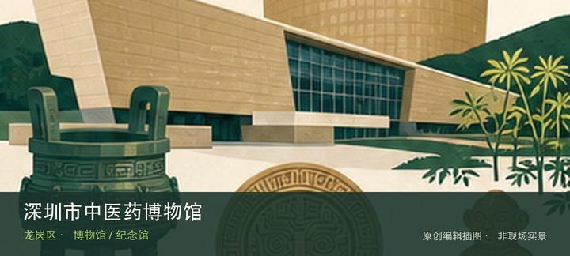
编辑配图·非现场实景深圳市中医药博物馆位于大运片区，中药标本、诊疗理论与现代中医药教育共同构成专题，场馆可能有校园或机构门禁，预约比临时导航…
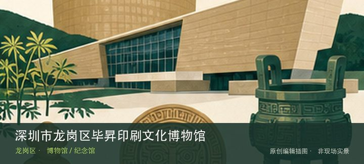
编辑配图·非现场实景深圳市龙岗区毕昇印刷文化博物馆位于横岗，以活字、印刷设备与出版传播为主题，能从工艺理解知识复制，但目前闭馆，旧展览信息不…
深圳市龙岗区怡利翡翠博物馆位于龙西，从翡翠原石、矿物结构到雕刻和成品展示材料价值链，重点应放在材质与工艺而非零售价格。与…
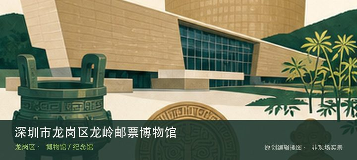
编辑配图·非现场实景深圳市龙岗区龙岭邮票博物馆位于龙岭学校内，邮票、邮政用品和主题集邮把小型纸品变成历史与传播档案，校园门禁决定普通游客能否…
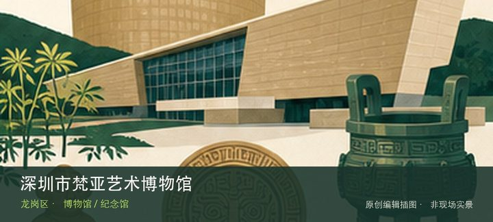
编辑配图·非现场实景深圳市梵亚艺术博物馆位于布龙路，民办艺术收藏与专题展览构成主要内容，实际开放门类和展期需核对，不应与附近大芬油画生产场景…
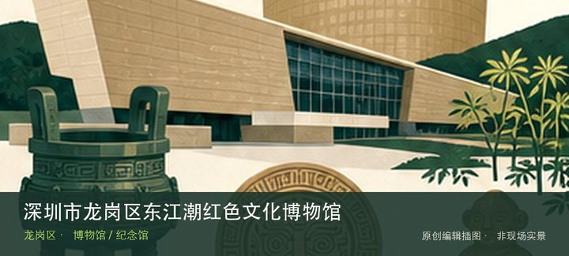
编辑配图·非现场实景深圳市龙岗区东江潮红色文化博物馆位于新生社区，以东江地区革命文献、生活物件和地方记忆为专题，适合补充公共纪念馆之外的民间…
深圳市龙岗区万国珠宝汇矿物博物馆位于六约珠宝产业区，矿物晶体、宝石原石和珠宝加工在产业场景中连续呈现，可从自然形成看到商…
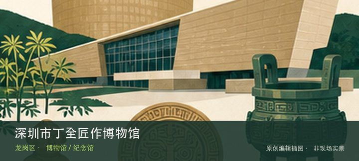
编辑配图·非现场实景深圳市丁全匠作博物馆位于平湖，木作、工具和传统工匠流程强调手工知识如何通过身体与器具传承，区别于只陈列成品家具的展馆。与…
深圳市百师园非物质文化遗产博物馆位于平湖，多门类非遗作品、传承人故事和活态展示集中出现，重点是比较不同技艺的材料与学习方…
深圳市隐秀高尔夫博物馆位于宝龙，球具演变、运动规则和俱乐部文化构成小众体育专题，场馆位于特定运营空间，社会参观条件需确认…
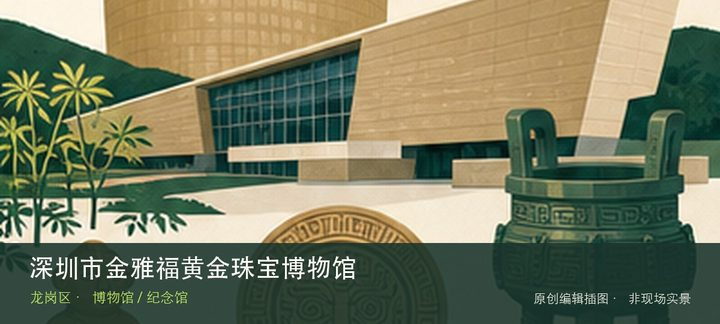
编辑配图·非现场实景深圳市金雅福黄金珠宝博物馆位于宝龙，黄金材料、冶炼加工、首饰工艺和产业品牌被串成完整链路，适合与矿物、翡翠馆做材质对照。…
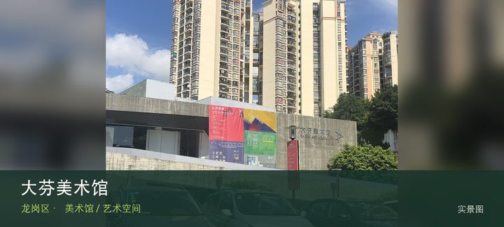
授权实景图大芬美术馆位于大芬油画村，公共展馆以大芬艺术生态、本地创作和全国性展览为主，为街巷中的商品画与工作室提供研究和展示坐标。…
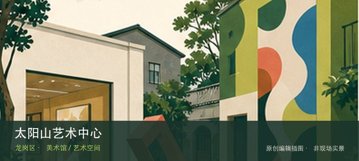
编辑配图·非现场实景太阳山艺术中心位于大芬老围，老围村屋与艺术展览结合成更私密的文化空间，建筑、院落和当期项目比固定馆藏更值得观察。这处地点…
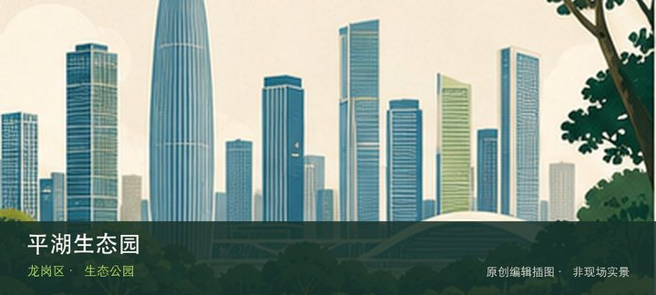
编辑配图·非现场实景平湖生态园位于平湖街道锦富路25号，约248公顷的大尺度城市生态园以山林、水体和果园景观承接平湖片区的郊野休闲需求。把注…
雪竹径公园位于坂田与吉华街道交界，约142公顷山体绿地位于坂田—吉华高密度城区之间，以林下步道和社区登山入口提供快速自然…
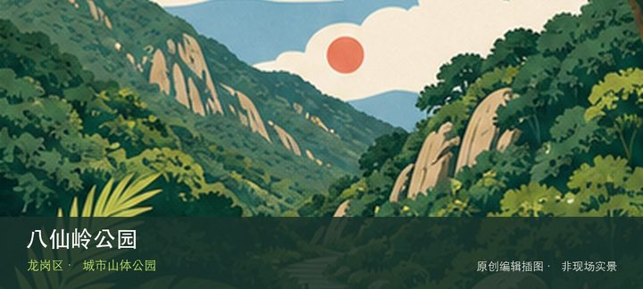
编辑配图·非现场实景八仙岭公园位于龙岗街道平南社区碧园路，超过123公顷的山体公园服务龙岗老城南侧，以登山步道、林荫和城区远眺为主要体验。这…
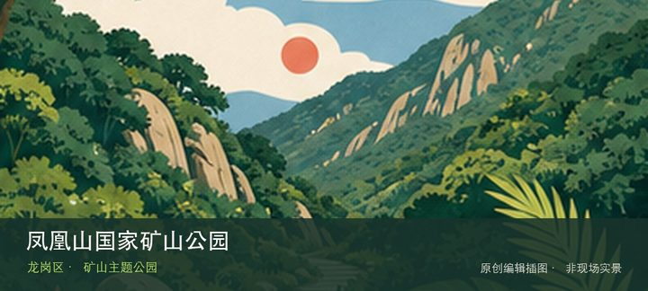
编辑配图·非现场实景凤凰山国家矿山公园位于平湖街道凤凰大道364号，矿山遗迹、地质剖面和修复后的山体景观共同呈现工业资源利用与生态治理的关系…
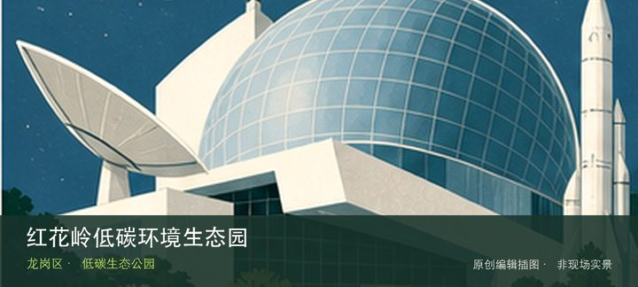
编辑配图·非现场实景红花岭低碳环境生态园位于龙岗街道盐龙大道辅道北侧，约65公顷环境生态园以固废治理、低碳设施和修复景观提供城市环境科普视角…
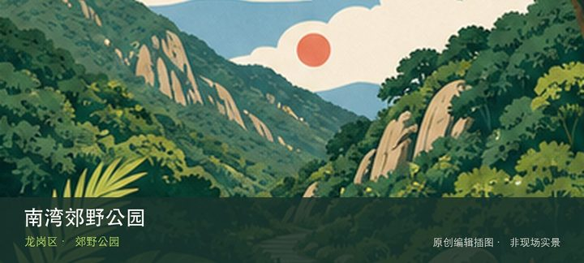
编辑配图·非现场实景南湾郊野公园位于南湾街道简竹路支路，梧桐山风景区北侧，南湾街道新开放的郊野公园把山林架空步道、滨水生态空间与连续缓坡游线…
三联郊野公园位于吉华街道三联社区三联东路，横跨吉华、南湾两个街道的大尺度郊野公园把环湖自行车道、环山绿道、登山道与千米级…
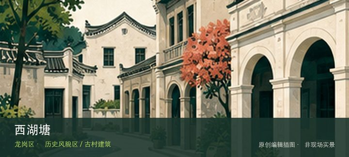
编辑配图·非现场实景西湖塘位于园山街道西湖塘片区，首批历史风貌区保留客家聚落的街巷、围屋和山前村落关系，参观以公共通道为限。从西湖塘客家街巷…
平湖大围位于平湖街道平湖社区，老围屋与平湖墟镇发展线索并存，可在公共街巷中观察围合建筑与现代商业街的尺度变化。与同类地点…
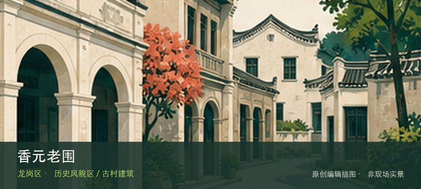
编辑配图·非现场实景香元老围位于龙岗区香元排片区，传统客家围屋在城市社区中保留门楼、围合院落与宗族空间线索，内部开放以现场为准。现场的空间线…
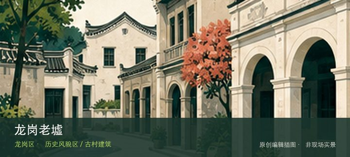
编辑配图·非现场实景龙岗老墟位于龙岗街道龙岗墟片区，老墟街道、骑楼和商贸记忆记录龙岗从集镇到城区的演变，适合与龙园和客家文化点串联。先辨认龙…
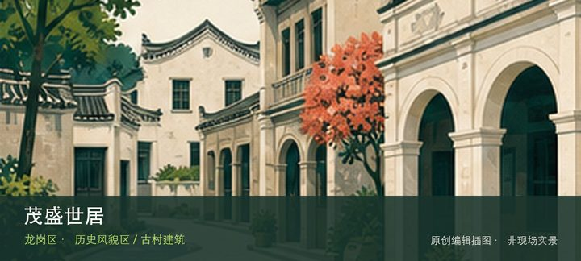
编辑配图·非现场实景茂盛世居位于横岗街道四联社区，保存较完整的客家围屋以门楼、月池和围合院落呈现横岗客家聚落形态。先辨认茂盛世居门楼，再观察…
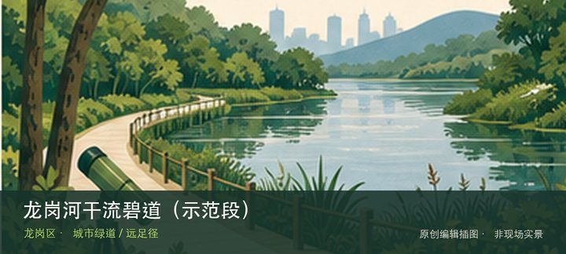
编辑配图·非现场实景龙岗河干流碧道（示范段）位于龙岗街道龙园片区，吉祥南路桥至龙园福宁桥，约4.6公里的滨水示范段以客家文化和多元生境重塑龙…
神仙岭水库碧道位于龙城街道盐龙大道神仙岭水库，约2.6公里的环库碧道在18.6公顷山水范围内完善雨水沟盖板、亲水平台和休…
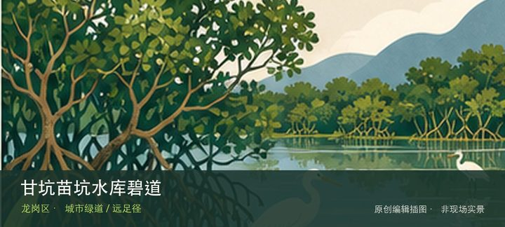
编辑配图·非现场实景甘坑苗坑水库碧道位于平湖街道平湖生态园甘坑—苗坑水库，约9.63公里的郊野型湖库碧道连接甘坑、苗坑两座水库，以库尾慢行道…
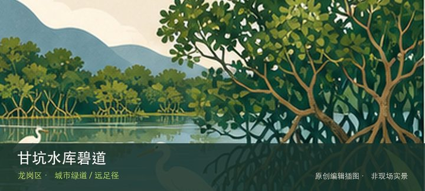
编辑配图·非现场实景甘坑水库碧道位于平湖街道平湖生态园，深圳环境科学研究院至甘坑水库，约0.48公里的甘坑河短线碧道通过滨水绿带、慢行系统、…
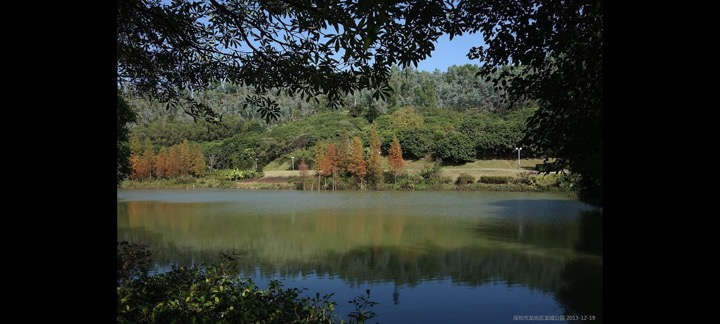
编辑配图·非现场实景龙城公园绿道位于龙城公园闭合环线，新建约8.6公里并连接原有4.4公里的公园绿道，以城市山体、湖景和运动节点构成闭合慢行…
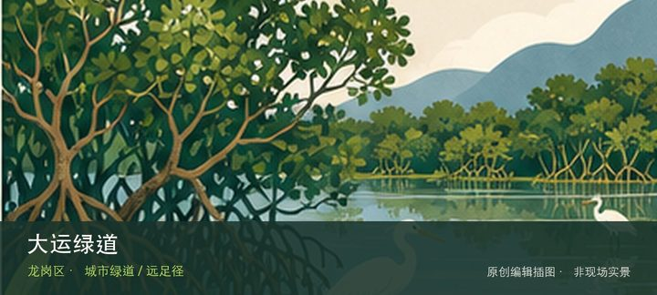
编辑配图·非现场实景大运绿道位于大运公园神仙湖周边，约7.8公里的公园绿道依山傍水，其中约4.2公里主园路可骑行，适合夜跑和分段慢行。现场的…